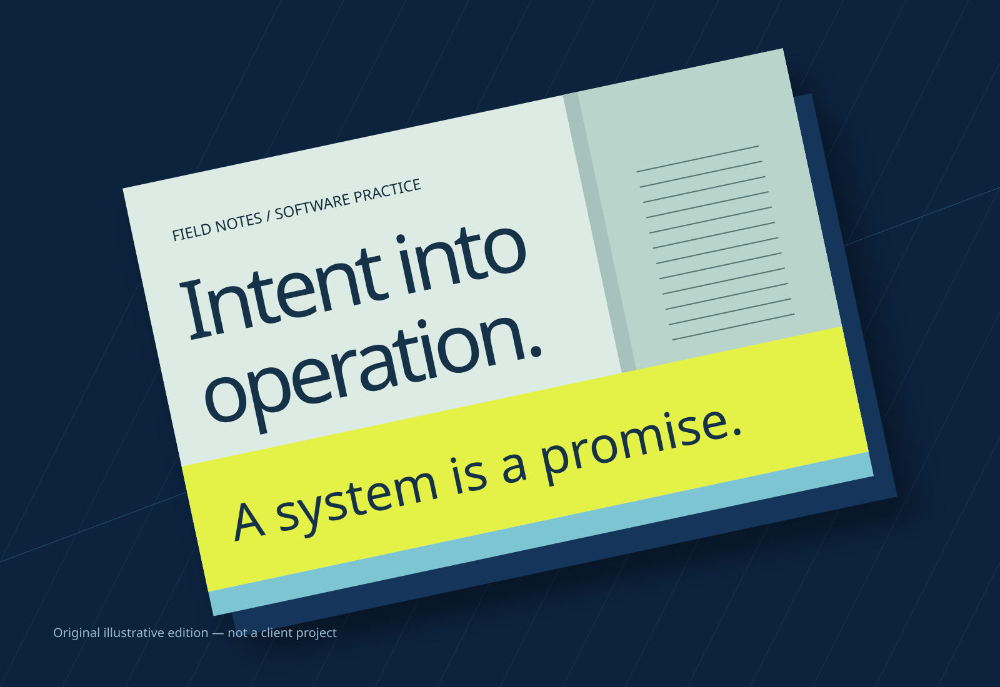

From requirement
to workable system.
An illustrated reflection on software craft: understanding the need, making a change and staying responsible for what follows.
Personal practice essay / Illustrative artwork / Not a client case study

Start with the
actual need.
A request often arrives as a desired change: add a field, adjust a process, make a report. I want to understand what that change is meant to help someone do. Who uses the information? Where does it come from? What would a useful result look like?
In Dynamics 365 F&O and ERP work, those questions connect software to an existing way of operating. Requirements need to be specific enough for technical decisions, but also understandable enough for people from different teams to challenge them.
That is why I see clarification as part of development, not as a delay before it begins. The point is not to generate more documentation. It is to give the work a shared meaning.
Design it.
Build it.
Make it usable.
Requirements → technical design → implementation → testing → deployment → support.
This is a chain of responsibilities, not a claim that every project follows a perfect straight line.
Carry the context
with the change.
Technical design turns a need into choices. Implementation gives those choices a concrete form. Testing asks whether the result fits the original intention, including the less convenient paths that a happy-path demonstration can miss.
Deployment and support belong to that same story. A change is not finished merely because it works on a developer’s machine. People need to understand what changed, and the next person working on it needs enough context to make a considered decision.
Cross-team coordination helps that context survive. My approach is to connect the requirement, the implementation and the conversations around both—not to treat code as an isolated deliverable.
Return to the collection